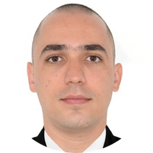

|  |
Diego VelascoMaster of Engineering (Focused on Artificial Intelligence and Computer Vision) Electronics and Telecommunications Engineer I am also a Web Developer, I 💚 coffee, cycling, movies and videogames. |
| Dates | Position | Company | Location |
|---|---|---|---|
| Jan. 2017 - Present | Engineering coordinator | Velvack - Panacea INC. | Cali, Colombia - Dallas, USA |
| Feb. 2013 - Dec. 2016 | Engineering coordinator | Velvack S.A.S. | Cali, Colombia |
| Jan. 2013 - Dec. 2013 | Innovation Engineer | PANACEA Quantum Leap Technology | Cali, Colombia - Dallas, USA |
| May 2012 - Dec. 2012 | Project Engineer (Internship) | EMCALI Telecommunications - Guabito headquarters | Cali, Colombia |
|
|